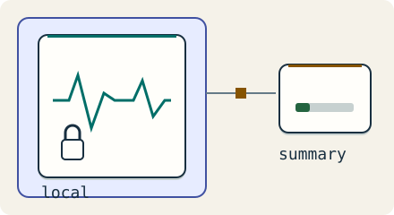

Go deeper · 7 minutes
Privacy by design
The safest data to protect is data the service never receives.
Open this lesson
A wearable knows more than the dashboard needs
A wrist device samples motion every second. The person wants a daily activity summary, not a server-side copy of every movement. Uploading all raw readings creates a sensitive archive and an ongoing deletion obligation. Start by asking which feature needs which data, who can read it and how long it must exist.
Move the boundary deliberately
Choose where each field is readable. Device-only data cannot power a server feature; end-to-end encrypted payloads still reveal upload metadata. Inspect the breach boundary.
Worked example: sparse uploads
Less payload reduces the sensitive archive, but a daily summary can still reveal health information. Consent, authorization and retention remain necessary. These decimal byte calculations do not measure radio energy. A passing traffic day cannot prove device isolation, encryption or legal compliance.
Collect only the feature payload
- Raw: 1.38 MB/day: 16 bytes × 86,400 samples. About 41.5 MB for 30 days.
- Summary: 2 KB/day: About 690 times less payload, still sensitive information.
- Set a retention rule: Consent, authorization and deletion apply to summaries too.
Keys and deletion are workflows
Use authenticated encryption, unique nonces and well-reviewed libraries. Protect data keys with wrapping keys in a device key store. Routine rotation can rewrap keys; a compromised wrapping key may already have exposed them, requiring new data keys for future content. Revocation cannot recall copied plaintext. Deletion must cover object versions, exports and backups as well as live rows. Cryptographic erasure requires every usable copy of the relevant key to be gone.
Deletion needs a receipt
- Revoke future access: Retire device access and rotate affected keys. Already copied plaintext cannot be recalled.
- Visit every store: Delete rows, versions, indexes, caches and exports; track backup expiry.
- Test a restore: Check that a restored backup reapplies deletion receipts before serving data.
Key numbers
- Raw payload
- ≈ 1.38 MB/day. 16 B × 86,400 samples
- Thirty days local
- ≈ 41.5 MB. Before indexes, encryption overhead and spare capacity
- Summary payload
- ≈ 2 KB/day. About 690 times less payload, still sensitive
Check your reasoning
Think through these questions before opening the lesson. In the game you can test the idea and compare your reasoning.
- The service itself decrypts uploaded notes to build an ordinary search index. Which privacy claim is accurate?
- Can we keep server search and claim the service cannot read notes? Follow-up: what does the first version offer?
- Every authorized device is lost. The service holds no content recovery secret. What could still restore encrypted notes?
- The customer asks for proof of deletion. What can we actually prove? Follow-up: a backup is restored next week.
- Active rows are deleted, but retained backups still contain decryptable copies. Which receipt is accurate?
The key point
Choose what leaves the device, who holds keys and how deletion finishes before collecting data.
Practise this idea
- Easy
Lab results portal
Labs send results to a portal, patients get a notice that a result is ready and open it. When the notice goes to thousands of people at the same minute, they all open the portal at once. Nobody should get the same notice twice.
- Medium
Patient health records
A hospital network keeps patient charts, orders, notes and scanned documents for 40 hospitals. Doctors need a chart in under a second, no saved note may be lost when a server or a building fails (in a whole-region disaster, at most the last minute of edits may need re-entering from the ward), and an auditor can walk in any day and ask you to prove who looked at what.
- Hard
Health readings from a wearable
A wearable records health readings even when its phone or cloud service is unavailable. Keep raw readings on the device when possible and upload only consented summaries in sparse batches. The system must not lose locally saved readings during a supported outage, and deleting an account must have a verifiable end-to-end workflow.
- Medium
Smart home
One million homes have a hub that keeps a live connection to your cloud. The hub reports its devices every few minutes, and the phone app sends commands like "lock the door". Commands must feel instant and must not be repeated. Once in a while a power cut ends and every hub reconnects together.